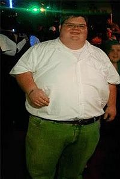

Peter Griffin
 De: La Frikipedia, la enciclopedia extremadamente seria.
De: La Frikipedia, la enciclopedia extremadamente seria.
De la serie grandes personajes:
| Nacimiento
|
1999, como clon defectuoso de Homer Simpson
|
| Muerte
|
Cuando pierda una pelea contra el pollo,dos años después de su divorcio con Lois
|
| Ocupación
|
Presidente de Petoria, empleado de una fábrica de juguetes sexuales, empleado de una cervecería y dueño de su propia televisora sin censura (PTV), entre otros.
|
| Nacionalidad
|
Irlandés aunque nacido en México
|
| Malo o bueno
|
Simplemente estúpido
|
| Atentados contra la humanidad
|
Ganarle en una competencia de pedos a Michael Moore
|
| Religión
|
Católico
|
| Notas
|
No se sabe quien es mas gilipollas, si el o su gran y mas odiado enemigo
|
Peter The maderfacker Griffin es un hombre gordo, con gafas, con los genitales en su barbilla, con varios pares de pantalones verdes y camisas blancas, capaz de recitar los estados de América en 10 decimas de segundo, su gran amigo es su perro parlante Bryan. Nació en Caniles, aunque se nacionalizó estadounidense.A parte de ser un apestoso gordo, se dice que se tiro a su perro en varias ocasiones, claro pero con un tutu rosado.
Su brillante intelecto es frecuentemente malinterpretado como estupidez, probablemente por la envidia que despierta. Protagoniza la serie de animación Padre de Familia, y a la vez trabaja en una fábrica de cerveza Pataket bajo la supervisión de un ser inadaptado y una carga para la sociedad Opi.
Orígenes
Se sabe que nació en algún lado en algun año, pero lo que se puede asegurar es que no es un hombre, es un robot nija, acrómico neohumano venido del planeta Inlatera. Además de porque su mujer nariz de sandwich tuvo que elegir estando frente a dos gordos cabrones Peter´s a cual disparaba, evidentemente eligio al robot.
Hay hipótesis que dicen que Peter Griffin es un clon de Homer Simpson, pero con la barbilla sumamente elevado (casi como barbilla roja) en conclusión de se puede decir que Peter Griffin es simplemento un tipo gordo cualquiera, con pantalones verdes como cualquiera y un perro que habla como cualquiera.
Los Griffin han ido dejando su rastro a lo largo y ancho de la Tierra y buen ejemplo de ello son sus antecesores:
- El inventor de la rueda
- Moisés
- Poncio de León Griffin, español descubridor de la fuente de la juventud en uno de sus viajes a América
- Arturo Griffin, rey de Inglaterra
- Nate Griffin, ascendencia de color (un tipo igual que el pero en negro); original de África y capturado y llevado a la gloriosa y libre América
- Su tatarabuelo Jawa el Griffin, famoso por encerrar en carbonita a Harrison Ford
- Su bisabuelo Willie "Black-eyed" Griffin, estrella del cine mudo.
- Su tio bisabuelo era Peter Hitler, el hermano favorito de Adolf Hitler
- Por último, sus padres. Son irlandeses. Su padre es cristiano apostólico románico, el cual es más estricto religiosamente que el mismisimo papa. En realidad, su padre biológico no es él, sino el borracho de un pequeño pueblo irlandés al que visita y le gana a un concurso de beber. Su madre es una juerguista amoral, aunque su marido no lo sabe.
- Uno de los creadores del personaje más querido de los niños de USA, Bugs Bunny; cuyo nombre fue elegido tras una dura votación entre este y "Fraín, el conejo retrasado".
- Angus Griffin, antepasado de Peter de origen Escoces, creó el Golf y sus reglas dejando claro que no pueden jugar "ni negros ni judios".
- Juanes Griffin, de origen mexicano y luchador en peleas de gallos.
- Ulysses S. Griffin, vence a los confederaros en una batalla a quien bebía cerveza mas deprisa, su frase: "se acabo la esclavitud pero de leer ni hablar"
- Hunckelberry Griffin, cruzó el missisipi a remo.
- Rufus Griffin: Otro antepasado negro de Peter. Era actor en los años 80 y es conocida la película Negro al futuro (una comedia tan mala que les hara pensar, coño tiene gracia).
La familia de Peter
 Peter en la Almeja Borracha
Vive con su esposa Lois una mujer muy atractiva, aunque con una nariz en forma de emparedado partido por los vértices, se siente enormemente orgulloso de ella porque en su juventud se tiro al cantante de Kiss.
Tiene tres hijos de los cuales solo dos son biologicos: Chris y Stewie. Por otro lado esta la querida por todos Meg Griffin. También tiene un hijo no reconocido cuyos cabellos son rojos como las llamas del mismisimo infierno y que solo sale en dos episodios. Es hijo de Peter y de un personaje secundario,Peter ni siquiera es conocedor de que existe pues despues de un pringoso accidente donando semen le toca rellenar los frascos. Acto seguido se puede suponer lo que pasó.
La mascota de la familia es Brian. Un perro parlante y mejor amigo de Peter.
Thaddeus Griffin el terrorifico y bigotudo hermano gemelo de Peter Griffin, al que solo se ve una vez, segun dicen despues de ese episodio hubo tal crisis de terror mundial que tuvieron que acabar con el ayudandose de 1000 niños armados con tirachinas.
Priscila Griffin hermana perdida de Peter
Los Amigos de Peter
Peter y su eterno enemigo el Pollo
Se deben destacar a:
Glenn Quagmire, vecino y amigo desde la infancia con tendencia a tirarse a todo lo que pasa por delante, además de tener tendencias fetichistas. Está colgao por Lois.
Cleveland Brown, vecino y amigo de cogorzas que regenta una hamburgueseria. Sus principales caracteristicas es negro y siempre tiene bigote, después de varios años se descubrió que tenia carisma y obtuvo su propio programa "The Cleveland Show".
Joe Swanson, su amigo mas reciente, es paralitico de cintura para abajo y a pesar de ello policia, es un fijo en las cogorzas de los amigos. Su esposa a pasado más de 9 años embarazada.
Vida laboral
Empezó trabajando en una fábrica de juguetes. Fue despedido 3 veces y recontratado magicamente sin entender nadie la explicación de porque seguía trabajando allí. Estuvo bajo las ordenes de su padre en uno de sus despidos. Cuando por fin iba a conseguir un ascenso su jefe murió atragantado con un trozo de panqueque. Al verse sin trabajo pero con unos pequeños ahorros decidio probar suerte como caballero andante en la feria medieval de la ciudad, consiguio vencer al caballero negro de la feria, pero rechazo unirse a la feria.
Capítulos después en un estado de obesidad bastante superior al normal decide hacerse pescador, pero pierde la casa a causa del préstamo para comprar al barco, para recuperar su casa a la caza de un enorme pez que habia matado a otro antiguo pescador.
Su negocio de pesca prospera y contrata a dos portugueses, Santos y Pasqual a los que paga con bolsas de Doritos, por la falta de beneficios los tiene que despedir tratando de dispararles con una escopeta.
Trabajo como de ojo de cristal de "Sandy Duncan" durante un corto periodo, que además no se especifica cuando narices fue dado que sucede en uno de los continuos Flash-Back de esta serie.
Otro de sus trabajos fue actuar como EL EQUIPO A, acompañado de sus amigos Quagmire, Cleveland y Joe (el mayor logro de este trabajo fue bajar a un gatito de un arbol, cortando el arbol a base de disparos).
Finalmente consiguió un trabajo en la fabrica de cerveza, consiguiendo así ir contento a trabajar (Como las vacas lecheras),a los 5 minutos estaba borracho, desnudo y preguntando al encargado porque no le miraba cuando hacian el amor (la cerveza era gratis para los trabajadores). A causa de esto, fue degradado y puesto bajo la supervision de Opi.
Recientemente abrio un local llamado Casa De Jalar Gran Pete, queria que fuese el mejor restaurante de la ciudad pero al final solo iban paralíticos que traia Joe. En un acto misericordioso les nego la entrada al restaurante lo que provoco la venganza de los paralíticos y la destrucción casi completa del local.
Trabajo durante 1 hora en el GTI como Limpiador de Caca del Baño, pero lo despidieron por cagar encima de Jeremy Clarkson.
Filmografía
Hechos sobre Peter

Dos grandes amigos de cogorzas
Peter en sus momentos de meditacion profunda.
- Hizo que los nazis descubrieran a Anna Frank comiendose una bolsa de patatitas.
- Hizo el amor con un rinoceronte que no le quería.
- Gano a Michael Moore en un concurso de pedos, batiendo el récord del pedo más largo en la historia de la televisión. Cuando fue preguntado por el hecho en cuestión, comentó: "Hehehehehe" esta risa se la robo a un cantante que solo conocia el y su familia ¡si! era su hijo por algo no es famoso.
- Sobrevivio a un ataque del Tails Doll
- Es capaz de tocar el piano como los mismos angeles, pero solo si esta muy borracho.
- Tuvo un tiranosaurio de mascota.
- Hizo natación sincronizada con vacas colgando de sus huevos.
- Se hizo pasar por alumno del instituto de Quahog para evitar que los adolescentes chuparan sapo.
- Es capaz de dar el pecho a su hijo.
- Ha fundado una religión sin ningún tipo de masacre o sucidio en masa.
- Eyacula precozmente, es decir, es de gatillo facil.
- Ha sido poseedor de un Zeppelin y un helicóptero, ambos acabaron estrellados contra la casa de su colega y vecino, Joe, amargao de la vida.
- La picadura de un conejo africano venenoso, le produjo una mutacion genética que se manifiesta en forma de pezon a la altura del parpado, por eso siempre lleva parche.
- Secuestro al papa y se lo presentó a su familia.
- Tiene antepasados filósofos, nazis y negros.
- Intento hacerse una felación a si mismo (fracasó, evidentemente, cayendo ridiculamente por las escaleras).
- Se independizo de U.S.A creando su propio Estado-casa llamado Petoria (Léase Pitoria), y anexionó la piscina de su amigo Joe. Mas tarde le declaró la guerra a su antiguo país.
- Peter tiene su propio campo gravitatorio debido a su gordura.
- Se vio envuelto en una feroz pelea con un pollo gigante que le dió un cupón vencido. Y ganó.
- Tiene los testículos en la barbilla.
- Es capaz de nombrar los 50 estados de América en medio segundo.
- Perdió la virginidad en un partido de rugby.
- El fue el fundador de la casa de Griffindor.
- Le ganó a Michael Moore en un concurso de "melodía de pedos".
- ¿Para que tienen las mujeres tetas?
-Para poder mirarles algo cuando hablamos con ellas.
- jejejejejejejejejeje....(Peter riéndose)
juejejueje jeeeeeeee ....(Peter haciendo el pajaro loco)
- Fue Han Solo y robó un sillón de la basura de la Estrella de la Muerte.
- Zas en toda la boca
- Fue el culpable de la quinta guerra mundial
- Le dio una paliza a Adhalidh
- En una ocasión olvidó como sentarse.
- Hahahahahahaaaaaaa... propano.
Frases míticas de Peter
Foto de archivo de Peter Griffin
.Pero por Dios Lois, sabemos ya que los dos no tenemos ese alijo de coca debajo del colchón(delante de todos)
- Perdon,soy subnormal.
- Yo sé que fui en mi vida anterior.
- ay dios ay dios ay dios mio !
- Lois: Promete que esta noche no beberas
- - Peter: Vale, te juro que esta noche nada de alcohol rozará estos labios
- En la fiesta...
- - Quagmire: ¡Quién se atreve a beber la cerveza!
- - Peter: ¡Yo mismo!
- Señor Griffin ¿Dónde se imagina dentro de unos años?
- -(Pensando)No digas tirandose a su mujer,no digas tirandose a su mujer.
- -Tirandome a...¿Su hijo?
- Querida Lois, Chris y yo nos hemos:
ido a la bibliotecaido de compras contigovuelto invisibles, pero estamos aquí- ido de pesca
- ido a la concha de la lora.
- Lois: Verá señorita Lockhart, venimos a hablar de...
- -Peter: No, Lois, no, no, vamos a hablar con educacion... Verá, señora Lockhart... nuestro hijo... quiere... esto... follársela.
- Peter:jajajajajajajaja... Propaano
- Lois: A ver piter, una palabra que empieza por que y termina por que de una sola sílaba.
- -Peter: (Murmurando) Que que que... cuatro fantasticos... cuatro fantasticos... camion rojo... camion rojo... bomberos... ¡¡ES QUE!!
- Frente a un grupo de catequésis:
Dios me quiere, me quiere un monton, porque me hace bocadillos... de salchichón
- AAAAAAAAAAA!!!
- deja de gritar que no me oyes, ¡Zas en toda la boca!
- shhhhh...aaaaaaah (Tras haberse hecho daño en la pierna)
- ¿Un degenerado yo? Pues usted es una fasticia. Ve, yo tambien se inventarme palabras.
- Tranquilos tengo una idea. Una idea tan inteligente, que hasta me explotaria la cabeza si tuviera la menor idea de qué es de lo que estoy hablando.
- Jajajajajaja...¿Me da un ejemplar de tetas? (Peter al quiosquero tras intentar comprender una viñeta del "Newyorker")
- ¿Tengo que dibujar el pene?
- -¿Tengo que esculpir el pene?
- -¿Tengo que dirigir la orquesta con el pene?
- ¡Esto es mas tenso que aquella vez que se me olvidó cómo sentarme!
- Esto es mas duro que acostarse con un rinoceronte que ya no te quiere
- Peter: Oye, Mort, ¿no tienes supositorios con sabor a fresa?
- - Mort Goldman: ¡Por Dios, Peter! ¿te los estás comiendo?
- - Peter: No, me los meto por el culo... ¡pues claro que me los estoy comiendo!
- Peter: ¡Eh! ¡Eh! ¡Hay un mensaje en mis cereales! Dice: Oooooooooo….
- - Brian: Peter, son aritos.
- (Tras casi ahogarse en un plato de sopa y lloriquenado como un bebé) ¡Estos manguitos no han servido de nada!
- - Lois: Ayy, necesito unos azotes...soy una chica mala, muy mala.
- - Peter: Yo soy un paladín con 18 de carisma y 97 puntos de vida. Puedo utilizar mi yelmo desintegrador y hacer un D4 de daño mientras mi mago semielfo blande su vengador sagrado + 5.
- - Lois: Que dices Peter!....Los paladines no pueden usar el yelmo desintegrador.
- - Peter: Aamm...vale, entonces soy un negro (con voz de viciosillo).
- Oh, mírame
Marge Lois! ¡Estoy haciendo feliz a la gente! Soy el hombre mágico del país feliz, de la casa de gominola de la calle de la piruleeeta. Ah, por cierto, pretendía ser sarcástico.
- Camarero, hay un cadaver en mi sopa.
- Eh, eh, eh, eh, eh, eh, eh, eh, eh, eh, eh, eh, eh... ¡Lois, este no es mi vaso de Batman!
- Muy bien niños no quiero a nadie en la piscina sin un socorrista de guardia.¡Hehehe,guarrrrra!¡Hehehehehe!.¡Cacafuti!
- Esto es mejor que cuando derroté a mi malvado gemelo.
- Estoy más orgulloso que cuando era un pavo real.
¿Sabías que...
- ...es archienemigo de Matt Groening?
- ...Homer Simpson es Peter Griffin con hepatitis?
- ...en un capítulo sobrevive a un puñetazo de Chuck Norris?
- ...Al que escribió lo anterior está muerto por creer que sobrevivió i no que le dejó vivir?
- ...va al bar de Moe cuando no sale en la série?
- ...El pollo que se pelea con Peter és en realidad Matt Groening disfrazado?
- ...Le dio una paliza a Adhalidh
- ...Le da al Ganja?
- ...puede crear una pelotilla de mierda moviendo las orejas y sacando mas cera que dinero de la cartera de un rico?
- ...parió a su madre despues de que su padre lo pariera a él?
- ...es una copia de Pakirrín?
- ...no se ducha por miedo a disolverse?
- ...es de Asturies?
- ...Lois Griffin fue violada por Peter, pero que como Lois se dejó no es violación?
- ...Es un clon de Homer Simpson?
- ...Confunde a todos los asiaticos con Jackie Chan?
- ...ha promocionado la famosa frase Zas, en toda la boca?
- ...Su ancestro es Hitler?
Autor(es):
- Krusher
- Nexo
- Joim
- Cañonero
- Senreot
- Frikiman
- Aque
- Orson
- Alex2610
- Keitasama
Frikipedia 2005-2016, Licencia
GFDL 1.2 - Extraído por FrikiLeaks